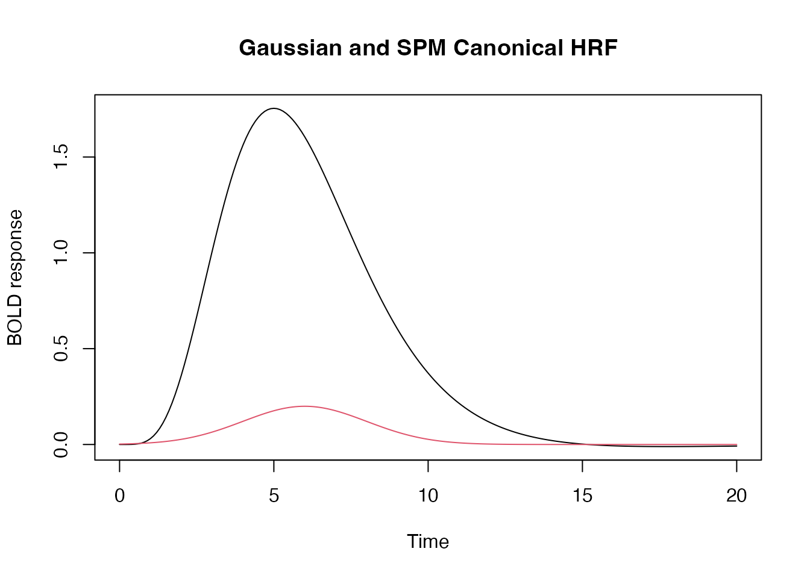
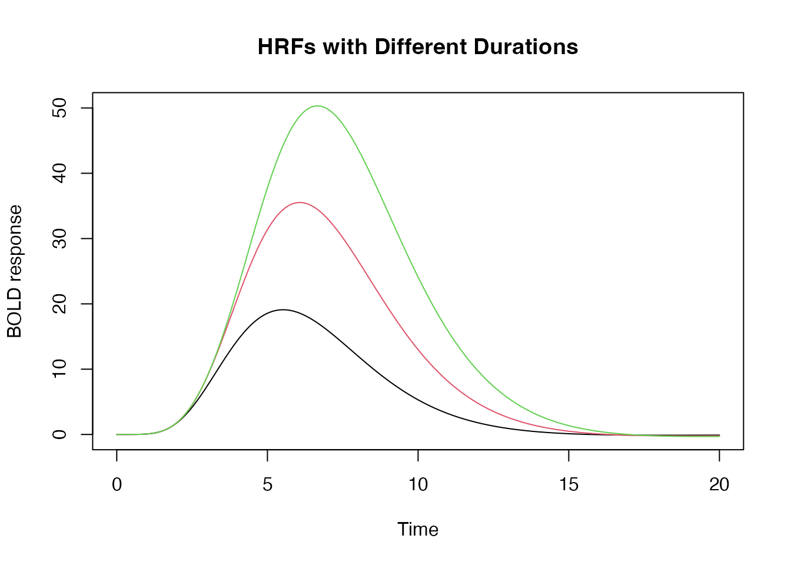

Hemodynamic Response Functions
Bradley R. Buchsbaum
2023-05-09
Source:vignettes/a_01_hemodynamic_response.Rmd
a_01_hemodynamic_response.RmdHemodynamic response function
A hemodynamic response function (HRF) is used to model the temporal evoluation of an fMRI response to an experimental “event”. An HRF is a function of time and usually peaks 4-6s afer the event onset.
There are a number of pre-defined HRFs in fmrireg that
make it easy to work with them. For example, we can use the SPM
“canonical” HRF. We use the function hrf_blocked which can
generate flexible hemodynamic responses.
library(magrittr)
## SPM canonical hrf
f1 <- hrf_blocked(hrf_spmg1, width=0)
## Gaussian hrf with default parameters (mean=6, sd=1.5)
f2 <- hrf_blocked(hrf_gaussian, width=0)
y_f1 <- f1(seq(0,20,by=.1))
y_f2 <- f2(seq(0,20,by=.1))
plot(seq(0,20,by=.1), y_f1, type="l", xlab="Time", ylab="BOLD response", main="Gaussian and SPM Canonical HRF",
ylim=range(c(y_f1, y_f2)))
lines(seq(0,20,by=.1), y_f2, type="l", col=2)
In the above, the “width” parameters tells the hrf_block
function that the event is “instantaneous”, i.e. that it is not extended
in time. This is the standard way of modeling short-lasting (e.g. < 2
seconds) in fMRI.
Changing Default Parameters
Standard HRF functions have default parameters that determine the
shape of the response. For the Gaussian HRF, these parameters are easy
to understand. The mean specifies the “peak” of the HRF and
the sd parameter specifies its “width”.
## the 'gen_hrf' function takes an hrf function and returns a new function substituting the supplied parameters as arguments.
hrf_7_3 <- gen_hrf(hrf_gaussian, mean=7, sd=3)
hrf_5_2 <- gen_hrf(hrf_gaussian, mean=5, sd=2)
hrf_4_1 <- gen_hrf(hrf_gaussian, mean=4, sd=1)
time <- seq(0,20,by=.1)
vals1 <- hrf_7_3(time)
vals2 <- hrf_5_2(time)
vals3 <- hrf_4_1(time)
plot(seq(0,20,by=.1), vals1, type="l", xlab="Time", ylab="BOLD response", ylim=range(c(vals1, vals2, vals3)), main="Three Gaussian HRFs with different parameters")
lines(seq(0,20,by=.1), vals2, type="l", col=2)
lines(seq(0,20,by=.1), vals3, type="l", col=3)
Setting the duration of a response
We can also set the duration of the input stimulus as follows:
hrf_w1 <- hrf_blocked(hrf_spmg1, width=1)
hrf_w2 <- hrf_blocked(hrf_spmg1, width=2)
hrf_w3 <- hrf_blocked(hrf_spmg1, width=3)
time <- seq(0,20,by=.1)
plot(time, hrf_w1(time), type="l", xlab="Time", ylab="BOLD response", ylim=range(hrf_w3(time)), main="HRFs with Different Durations")
lines(time, hrf_w2(time), type="l", col=2)
lines(time, hrf_w3(time), type="l", col=3)
We can also require that the HRFs be normalized so that, regardless of the block duration, the peak amplitude of the HRF = 1.
hrf_w1 <- hrf_blocked(hrf_spmg1, width=1, normalize=TRUE)
hrf_w2 <- hrf_blocked(hrf_spmg1, width=2, normalize=TRUE)
hrf_w3 <- hrf_blocked(hrf_spmg1, width=3, normalize=TRUE)
plot(time, hrf_w1(time), type="l", xlab="Time", ylab="BOLD response", ylim=range(hrf_w3(time)), main="HRFs with Different Durations, but normalized")
lines(time, hrf_w2(time), type="l", col=2)
lines(time, hrf_w3(time), type="l", col=3)
Modeling HRF saturation with the summation
argument
By default an increase in the duration results in the summation of a
series of shifted responses, which is consistent with the notion that
the hemodyamic response “adds up” or accumulates over time. But we can
disable this additive behavior by setting summate=FALSE.
This is useful if one assumes the HRF “saturates” (i..e does not
increase in amplitude) with extended stimulation.
hrf_w1 <- hrf_blocked(hrf_spmg1, width=2, summate=FALSE)
hrf_w2 <- hrf_blocked(hrf_spmg1, width=4, summate=FALSE)
hrf_w3 <- hrf_blocked(hrf_spmg1, width=6, summate=FALSE)
time <- seq(0,24,by=.1)
plot(time, hrf_w1(time), type="l", xlab="Time", ylab="BOLD response", ylim=range(hrf_w3(time)), main="Non-Summating HRFs with Different Durations ")
lines(time, hrf_w2(time), type="l", col=2)
lines(time, hrf_w3(time), type="l", col=3)
If we want the peak of the HRF to equal 1, we use the
normalize argument as follows:
hrf_w1 <- hrf_blocked(hrf_spmg1, width=2, summate=FALSE, normalize=TRUE)
hrf_w2 <- hrf_blocked(hrf_spmg1, width=4, summate=FALSE, normalize=TRUE)
hrf_w3 <- hrf_blocked(hrf_spmg1, width=6, summate=FALSE, normalize=TRUE)
time <- seq(0,24,by=.1)
plot(time, hrf_w1(time), type="l", xlab="Time", ylab="BOLD response", ylim=range(hrf_w3(time)), main="Normalized and Non-Summating HRFs with Different Durations ")
lines(time, hrf_w2(time), type="l", col=2)
lines(time, hrf_w3(time), type="l", col=3)
Multivariate HRF: B-splines and Derivatives
Sometimes we want to model an event with multiple “basis functions”. In this case the HRF is a function from time -> d-dimensional vector, where d is the dimension of the basis set.
## A third degree B-Spline with four bases.
hrf_bs_4 <- gen_hrf(hrf_bspline, N=4)
time <- seq(0,20, by=.1)
bmat1 <- hrf_bs_4(time)
matplot(time, bmat1, xlab="Time", ylab="BOLD Response", type='l', main="Bspline HRF basis set (N=4)")
## A first degree B-Spline with 12 bases.
hrf_bs_12 <- gen_hrf(hrf_bspline, degree=1, N=12)
bmat1 <- hrf_bs_12(time)
matplot(time, bmat1, xlab="Time", ylab="BOLD Response", type='l', main="Bspline HRF basis set (N=12)")
## the SPM + first derivative is a "built-in" HRF function.
bmat1 <- HRF_SPMG2(time)
matplot(time, bmat1, xlab="Time", ylab="BOLD Response", type='l', main="SPM + first derivative")
## the SPM + first derivative + second derivative is a "built-in" HRF function.
bmat1 <- HRF_SPMG3(time)
matplot(bmat1, xlab="Time", ylab="BOLD Response", type='l', main="SPM + 1st and 2nd derivative")
Creating “lagged” and “blocked” HRFs
In some cases, it might be useful to create an HRF function that has a temporal offset (a “lag” or “delay”). We might also want to create an HRF that has a fixed width or duration that is larger than zero. Below are examples of suched lagged and blocked HRFs.
## constructing a series of lagged HRFs
hrf_lag_1 <- hrf_gaussian %>% gen_hrf_lagged(1)
hrf_lag_3 <- hrf_gaussian %>% gen_hrf_lagged(3)
hrf_lag_5 <- hrf_gaussian %>% gen_hrf_lagged(5)
time <- seq(0,22,by=.2)
plot(time, hrf_lag_1(time), type='l', xlab="time", ylab="BOLD")
lines(time, hrf_lag_3(time), col=2)
lines(time, hrf_lag_5(time), col=3)
## constructing lagged and blocked HRFs
hrf_block_1 <- hrf_gaussian %>% hrf_lagged(1) %>% hrf_blocked(width=1, normalize=TRUE)
hrf_block_3 <- hrf_gaussian %>% hrf_lagged(3) %>% hrf_blocked(width=3, normalize=TRUE)
hrf_block_5 <- hrf_gaussian %>% hrf_lagged(5) %>% hrf_blocked(width=5, normalize=TRUE)
plot(time, hrf_block_1(time), type='l', xlab="time", ylab="BOLD")
lines(time, hrf_block_3(time), col=2)
lines(time, hrf_block_5(time), col=3)
Constructing a custom basis set using a set of lagged HRFs
Rather than using a b-spline basis set, we could construct our own
set of functions using a combination of lagged and/or blocked HRFs.
Suppose we want a series of shifted regressor functions that span a 20s
window. We can use a set of shifted hrfs to achieve
this.
hrf_set <- do.call(gen_hrf_set,
lapply(seq(0,20,by=2), function(i) { hrf_gaussian %>% hrf_lagged(i) }))
matplot(hrf_set(0:36), type='l', xlab="Time", ylab="BOLD Activity")
Creating an “empirical” HRF from a measured hemodynamic respose
Suppose you have measured a hemodynamic response and what like to use
that as a response model for further analyses? In this case you can use
the function gen_empirical_hrf to create a hemodynamic
response function. Below we extract our model by averaging over several
simulated response profiles.
mat <- replicate(20, {
h <- hrf_spmg1 %>% hrf_lagged(lag=runif(n=1, min=-2, max=2)) %>% hrf_blocked(width=runif(n=1, min=0, max=4))
h(0:24)
})
profile <- rowMeans(mat)
emp_hrf <- gen_empirical_hrf(0:24, profile)
plot(seq(0, 24, by=.1), emp_hrf(seq(0, 24, by=.1)), type='l', xlab="time", ylab="response", main="Empircal HRF")
We can also create a set of empirical basis functions using, for example, principal components analysis of a set of HRFs with plausible parameters for lag and width. Here we will simulate 50 HRFs and take the first 3 principal components as our basis set.
mat <- replicate(50, {
h <- hrf_spmg1 %>% hrf_lagged(lag=runif(n=1, min=-2, max=2)) %>% hrf_blocked(width=runif(n=1, min=0, max=2))
h(0:24)
})
matplot(mat, type='l', ylab="response", xlab="Time")
Now we perform PCA pn the matrix of simulated responses and use the
components as a basis set. The resulting function
emp_hrf_basis can subsequently be used in regression
modelling like any of the built-in hemodynamic response functions.
pcs <- prcomp(mat)$x[,1:3]
pcs <- apply(pcs, 2, function(x) x - x[1])
pcs_hrfs <- apply(pcs, 2, function(x) gen_empirical_hrf(0:24, x/max(abs(x))))
emp_hrf_basis <- gen_hrf_set(pcs_hrfs$PC1,pcs_hrfs$PC2,pcs_hrfs$PC3 )
matplot(0:24, emp_hrf_basis(0:24), type='l', ylab="Response", xlab="Time", main="PCA basis functions")